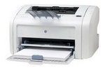

Використовується принцип ксерографії: лазерний промінь через систему дзеркал електризує певні ділянки селенового барабану. Таким чином, до цих ділянок пристає чорний дрібнодисперсний порошок - тонер. Згодом цей тонер під механічним тиском і температурою міцно пристає до паперу. Перед друкуванням наступної сторінки барабан нейтралізується і звільняється від тонеру.
Переваги: дешевизна друку і заправок, висока швидкість друку.
Недоліки: нижча якість друку порівняно із струменевими принтерами.
